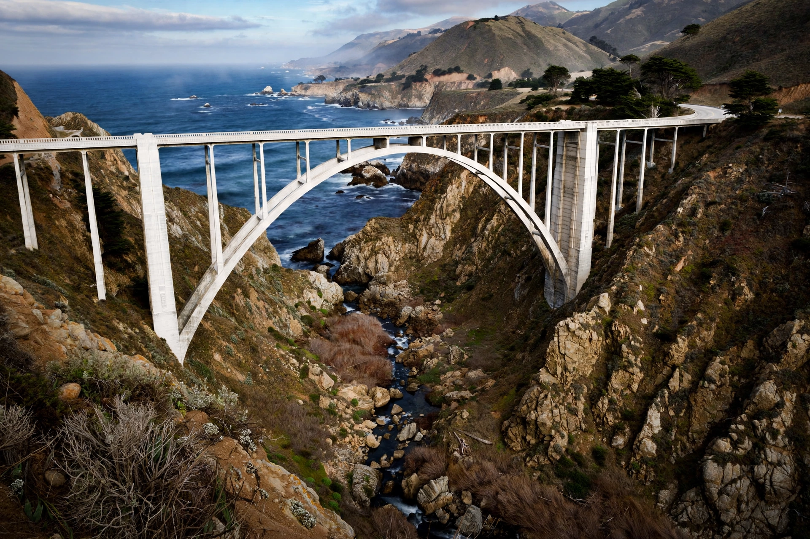

From Wikipedia, the free encyclopedia
| Bixby Creek Bridge | |
|---|---|
 Bixby Creek Bridge on the Big Sur coast | |
| Carries | California State Route 1 |
| Crosses | Bixby Creek |
| Locale | Big Sur, Monterey County, California |
| Design | Reinforced concrete open-spandrel arch |
| Total length | 714 ft (218 m) |
| Height | 280 ft (85 m) |
| Opened | 1932 |
Bixby Creek Bridge, also known as Bixby Canyon Bridge, is a reinforced concrete open-spandrel arch bridge on the Big Sur coast of California. Located 13 miles (21 km) south of Carmel-by-the-Sea, it carries California State Route 1 across Bixby Creek and is one of the most photographed bridges in California, frequently appearing in automobile advertisements, films, and television series such as Big Little Lies.
Before the bridge's completion in 1932, residents of the Big Sur coast were often cut off during winter because the old inland wagon road became impassable. Construction began in August 1931; the design, by state highway engineer C. H. Purcell and bridge engineer F. W. Panhorst, used a graceful single arch of 360 feet (110 m) to span the steep canyon. The project consumed about 6,600 cubic yards of concrete and over 600,000 pounds of reinforcing steel, and was completed under budget in 1932, five years before the full coastal highway opened.
The bridge is 714 feet (218 m) long, 24 feet (7.3 m) wide, and rises 280 feet (85 m) above the creek. At the time of construction its main arch was among the longest reinforced-concrete arch spans in the world. It underwent a seismic retrofit in the late 1990s to strengthen it against earthquakes.
The bridge's dramatic setting at the meeting of canyon and Pacific surf has made it an icon of California road trips. It features prominently in the opening credits of the HBO series Big Little Lies and in numerous car commercials and films.